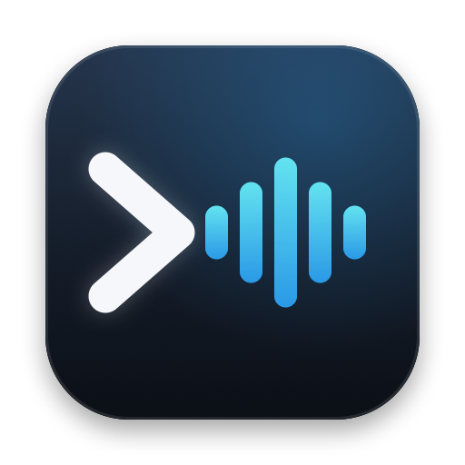
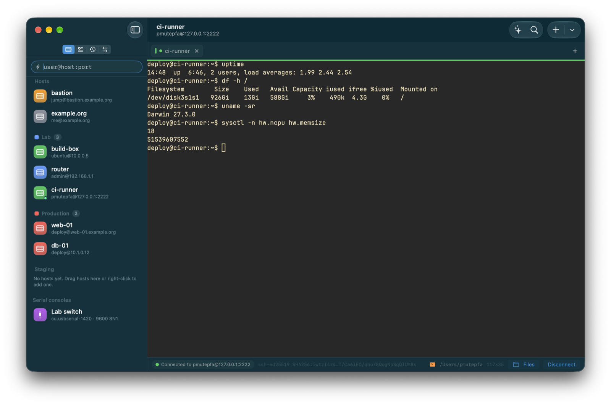
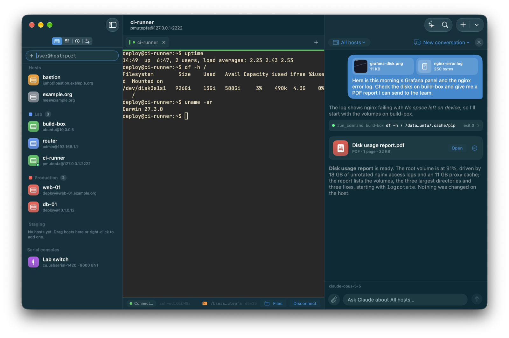
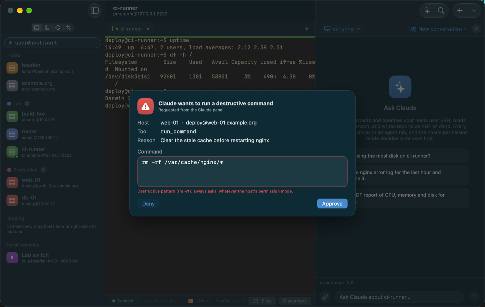
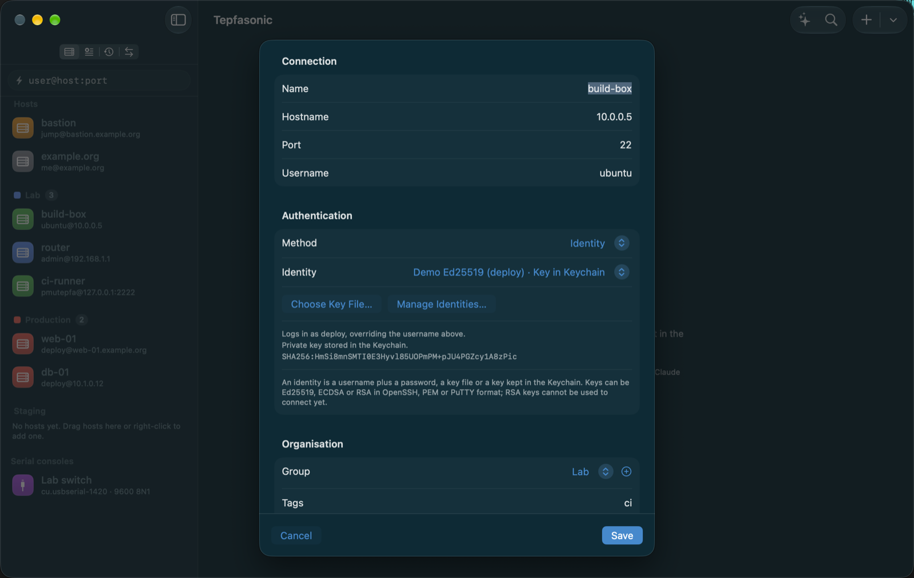
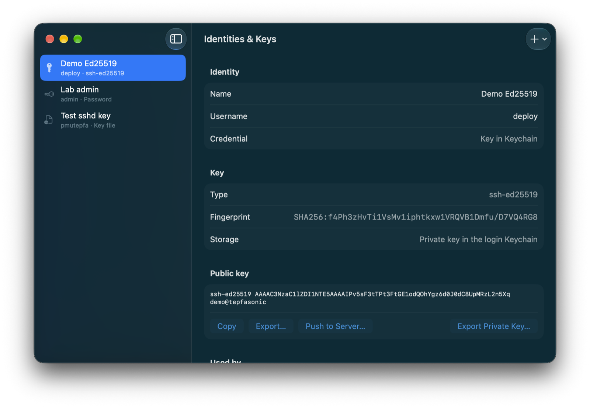
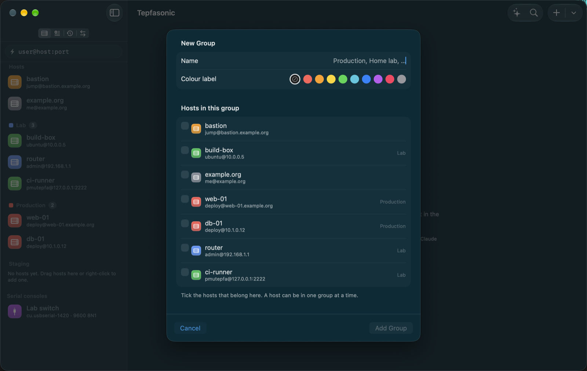
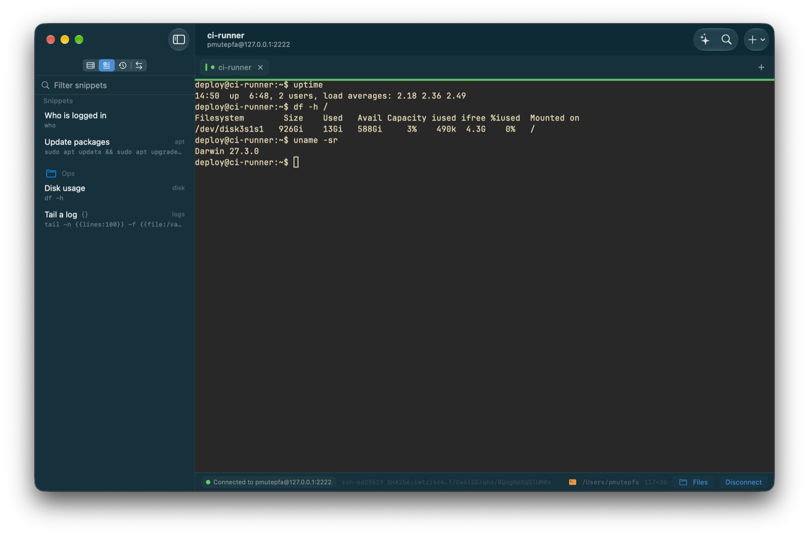
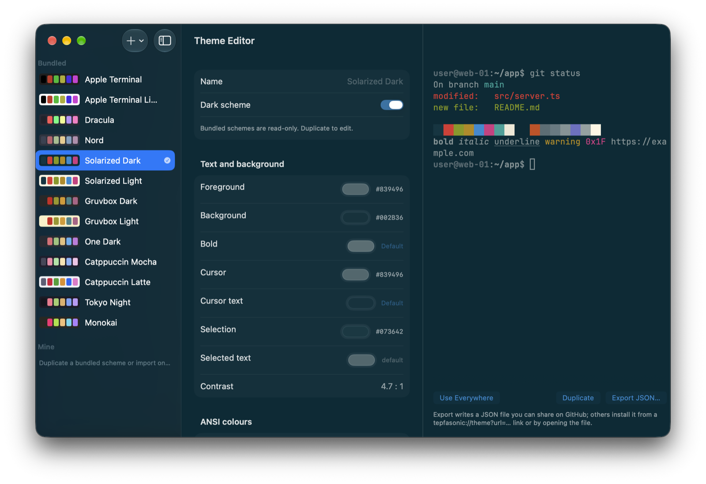
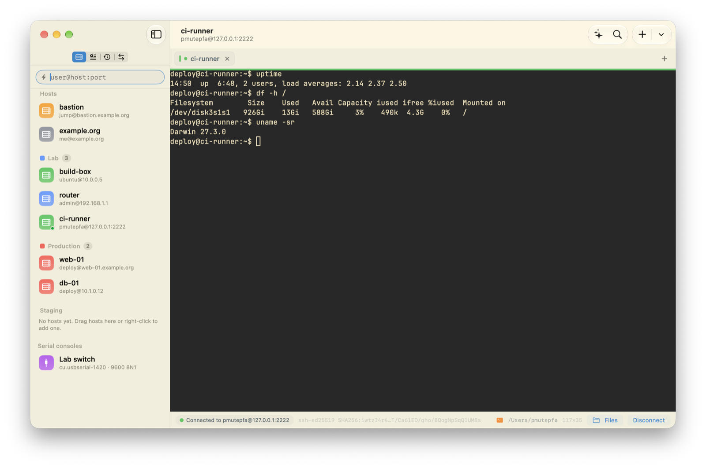

Tepfasonic
A free, open-source DevOps and AIOps tool for macOS: an SSH client and terminal with a built-in Claude agent, made for managing large fleets of servers.
No account. No server. No subscription.
Latest release · macOS 15 or later, Apple silicon and Intel · all releases. Unsigned for now: right-click → Open on first launch (details).
Everything on your Mac
Hosts in a local database, secrets in the Keychain behind Touch ID. Nothing leaves the machine except the SSH connections you make.
Terminal you'd expect
Tabs, nested splits, true colour, 100 000 lines of scrollback, auto-reconnect after sleep, restored on relaunch.
Move between Macs
One encrypted .tepfa file carries hosts, keys, snippets and themes. Import from ~/.ssh/config, Termius, PuTTY and Tabby.
Claude on your servers
Bring your own API key, or connect Claude Desktop and Claude Code over MCP. Every command passes your per-host guardrails and lands in an audit log.
See it in action
Every screenshot runs against a demo fleet. The hosts, keys and conversations are made up; your real hosts never leave your Mac.



rm -rf always ask first, whatever a host's permission mode, and you can edit the command before it runs.





New in 0.3.6
- Hardened dictation against a macOS 26/27 system bug (a crash inside SwiftUI's own hover hit-testing that affects many apps): the composer no longer re-renders the conversation as you type or dictate, and the microphone button no longer animates when recording starts.
New in 0.3.5
- Fixed a crash: starting dictation in the Claude composer could quit the app the moment macOS returned the microphone or speech permission. The microphone now works without crashing.
New in 0.3.4
- Talk to Claude: a microphone button in the Claude composer dictates your message. Speech is transcribed on your Mac and never leaves it; the text lands in the composer to edit and send.
- This site and the README now have a screenshots gallery.
New in 0.3.3
- Check for Updates works: the update feed is now published with every release, so the app finds new builds and offers the download. (Builds stay download-only until the app is signed with a Developer ID.)
- An About the developer section on this page.
New in 0.3.2
- Full screen with a colour scheme on the chrome now hides the system toolbar and draws its own header rows, so no grey glass appears behind the title or the buttons, clicked or not. The title, the sidebar toggle and the Claude, Search and
+buttons sit where they do in a window. - The Claude panel's scope menu shows each group with its host count; pick one to talk to a group of servers.
New in 0.3.1
- Groups as projects: create a group from the sidebar's
+menu, tick the hosts that belong to it, drag hosts between groups, reorder and collapse groups, and add a host straight into a group. - The top bar keeps the scheme's colour in full screen: no grey block behind the title and no grey strip above the sidebar.
New in 0.3.0
- Attach files to Claude: images, PDFs, Word documents and text files such as logs and configs, from the paperclip or by dropping them on the panel.
- Ask for a report as a PDF or a Word document and Claude writes it: paginated PDFs with headings, lists, tables and code, real
.docxfiles, or HTML, Markdown, text and CSV, each shown as a card you can open or save. - The colour scheme now colours the whole app: sidebar, tabs, status bar, Claude panel, sheets and every window take their palette from Solarized, Nord, Gruvbox or whichever scheme is in use. Switch it off in Settings → Appearance for the standard materials.
- A quieter interface in the iOS idiom: icon tiles for hosts, pill tabs, a status capsule, message bubbles and a rounded composer.
Full notes on the releases page.
Updates
The app checks appcast.xml on this site once a day. Builds signed with a Developer ID install updates in place through Sparkle; unsigned builds offer the download instead. Enable the beta channel in Settings → Updates to follow pre-releases.
Documentation
About the developer
Tepfasonic is designed and built by Rufaro Edward Mutepfa, an engineer who manages fleets of servers and AI deployments and wanted a terminal that understands them: hosts grouped as projects, every command audited, and Claude on hand to inspect, operate and report. The app is free and open source; issues and pull requests are welcome.